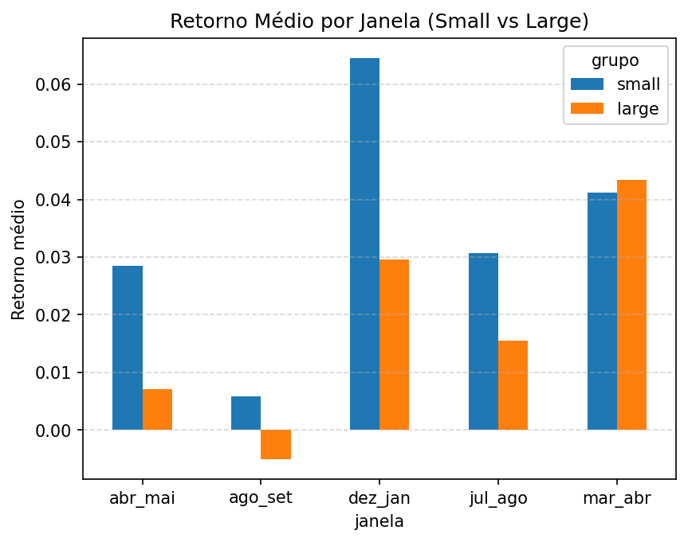
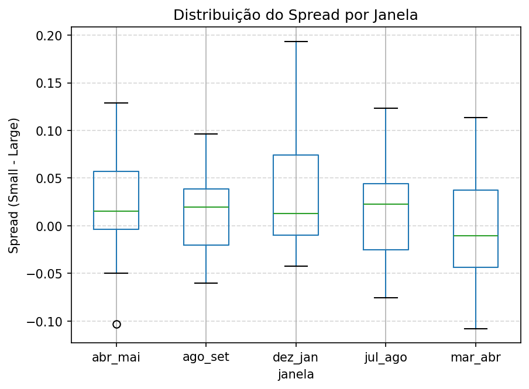
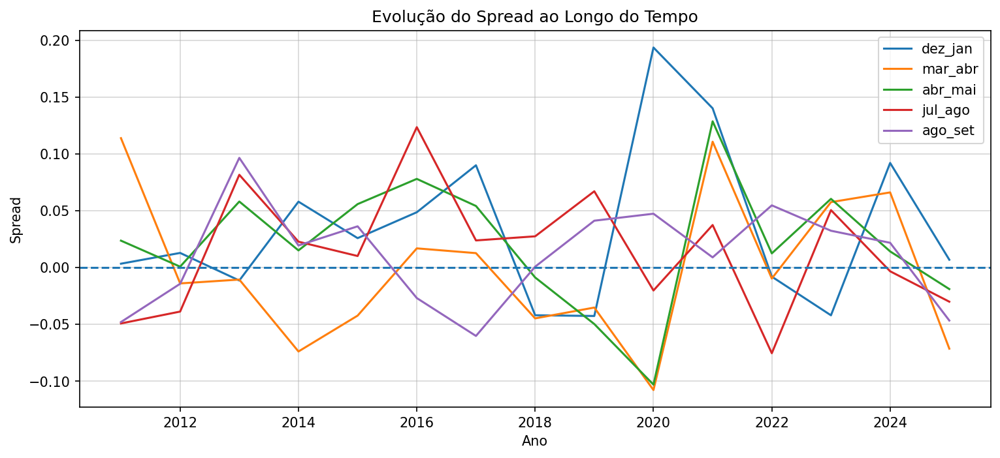
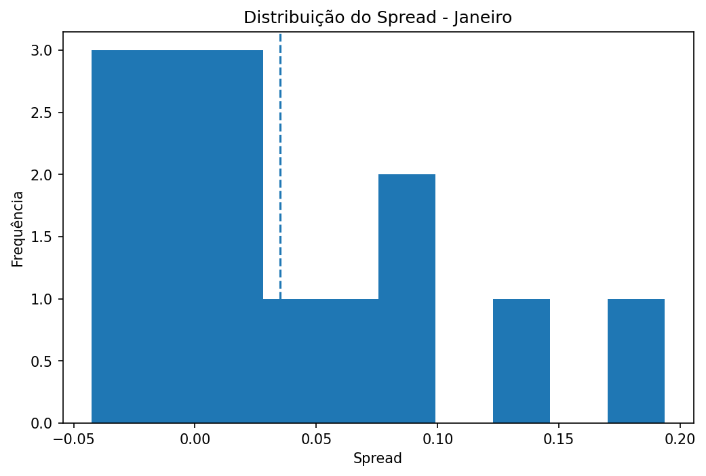

Uma análise empírica do desempenho relativo entre small caps proxy e large caps proxy no mercado acionário brasileiro.
O estudo utiliza liquidez como proxy de tamanho, compara a janela dezembro→janeiro com janelas de controle e combina evidência econômica, estatística e visual.
Este projeto investiga a existência do efeito janeiro no mercado acionário brasileiro, comparando o desempenho de ações de menor e maior liquidez.
A análise utiliza a liquidez como proxy de tamanho e avalia se ações menos líquidas apresentam desempenho superior na janela de dezembro→janeiro em relação a outras janelas do ano.
O spread médio em dezembro→janeiro foi o maior entre as janelas analisadas.
O efeito foi significativo, mas próximo ao limite de 5%, indicando robustez limitada.
O gráfico mostra que 2020 teve impacto relevante no resultado, elevando o spread médio.
Outras janelas também apresentam spreads positivos, embora menos consistentes.
Contexto do efeito janeiro, proxy utilizada e objetivo da análise.
O chamado efeito janeiro é uma das anomalias sazonais mais conhecidas da literatura financeira. Em termos gerais, a hipótese sugere que ações menores ou menos negociadas tendem a apresentar desempenho relativamente superior no início do ano.
Como a base histórica não dispõe de market cap confiável para todo o período, este estudo utiliza a liquidez média de novembro como proxy de tamanho, classificando os ativos em grupos de menor e maior liquidez antes da janela analisada.
O estudo compara o retorno das carteiras formadas com o bottom 30% e o top 30% da distribuição de liquidez, observando a janela principal de dezembro→janeiro e também outras janelas de controle ao longo do ano.
Construção das carteiras, definição das janelas e testes utilizados.
A base foi preparada com dados históricos por ticker, contendo data, preço ajustado (close_adj) e volume financeiro (volume_fin).
Para cada ano da amostra, foi calculada a liquidez média de novembro, utilizada como critério de classificação dos ativos.
A janela principal foi definida como:
Além da janela principal, também foram testadas janelas de controle, como março→abril, abril→maio, julho→agosto e agosto→setembro.
Na etapa estatística, foram utilizados:
Os retornos foram calculados com base em preços ajustados, buscando refletir melhor o retorno econômico total dos ativos.
Saídas principais do projeto com filtro, ordenação e scroll.
| ano | n_empresas | liquidez_media |
|---|---|---|
| 2011 | 246 | 18,689,324.489603 |
| 2012 | 258 | 21,316,504.367817 |
| 2013 | 253 | 23,715,471.848912 |
| 2014 | 247 | 22,342,507.440689 |
| 2015 | 254 | 20,163,222.411436 |
| 2016 | 225 | 34,106,275.424739 |
| 2017 | 256 | 31,123,697.678786 |
| 2018 | 273 | 46,732,041.943836 |
| 2019 | 288 | 54,599,821.960055 |
| 2020 | 313 | 88,097,998.199722 |
| 2021 | 345 | 70,165,749.335943 |
| 2022 | 359 | 80,438,643.104114 |
| 2023 | 345 | 61,535,458.400950 |
| 2024 | 342 | 58,307,015.999506 |
| 2025 | 324 | 61,624,093.760620 |
| grupo | ano | large | small | spread_small_minus_large | n_small | n_large |
|---|---|---|---|---|---|---|
| 2011 | -0.031594 | -0.025558 | 0.006036 | 73 | 73 | |
| 2012 | 0.085510 | 0.090151 | 0.004641 | 77 | 77 | |
| 2013 | 0.029233 | 0.012623 | -0.016610 | 75 | 75 | |
| 2014 | -0.048711 | -0.000309 | 0.048402 | 74 | 74 | |
| 2015 | -0.022156 | -0.012170 | 0.009986 | 76 | 76 | |
| 2016 | -0.096363 | -0.027754 | 0.068610 | 67 | 67 | |
| 2017 | 0.126276 | 0.203522 | 0.077246 | 76 | 76 | |
| 2018 | 0.132813 | 0.083854 | -0.048959 | 81 | 81 | |
| 2019 | 0.164028 | 0.196234 | 0.032206 | 86 | 86 | |
| 2020 | 0.069710 | 0.217661 | 0.147951 | 93 | 93 | |
| 2021 | 0.013148 | 0.060361 | 0.047213 | 103 | 103 | |
| 2022 | 0.028190 | -0.008445 | -0.036635 | 107 | 107 | |
| 2023 | 0.126359 | 0.062399 | -0.063960 | 103 | 103 | |
| 2024 | -0.030720 | 0.046558 | 0.077278 | 102 | 102 | |
| 2025 | 0.032213 | 0.030712 | -0.001501 | 97 | 97 |
| grupo | ano | janela | large | small | spread_small_minus_large | n_small | n_large |
|---|---|---|---|---|---|---|---|
| 2011 | dez_jan | -0.032215 | -0.028858 | 0.003357 | 75 | 75 | |
| 2012 | dez_jan | 0.073720 | 0.086551 | 0.012832 | 81 | 81 | |
| 2013 | dez_jan | 0.027527 | 0.016087 | -0.011440 | 76 | 76 | |
| 2014 | dez_jan | -0.056566 | 0.001381 | 0.057947 | 75 | 75 | |
| 2015 | dez_jan | -0.044850 | -0.019002 | 0.025849 | 77 | 77 | |
| 2016 | dez_jan | -0.088068 | -0.039431 | 0.048637 | 69 | 69 | |
| 2017 | dez_jan | 0.131164 | 0.221131 | 0.089967 | 77 | 77 | |
| 2018 | dez_jan | 0.128258 | 0.086252 | -0.042006 | 82 | 82 | |
| 2019 | dez_jan | 0.151821 | 0.109163 | -0.042658 | 88 | 88 | |
| 2020 | dez_jan | 0.050129 | 0.243731 | 0.193602 | 94 | 94 | |
| 2021 | dez_jan | -0.014682 | 0.125427 | 0.140109 | 106 | 106 | |
| 2022 | dez_jan | 0.014029 | 0.005985 | -0.008044 | 112 | 112 | |
| 2023 | dez_jan | 0.114245 | 0.072187 | -0.042058 | 105 | 105 | |
| 2024 | dez_jan | -0.036850 | 0.055173 | 0.092023 | 105 | 105 | |
| 2025 | dez_jan | 0.025086 | 0.031936 | 0.006849 | 99 | 99 | |
| 2011 | mar_abr | 0.021807 | 0.135652 | 0.113845 | 75 | 75 | |
| 2012 | mar_abr | -0.034123 | -0.048116 | -0.013993 | 76 | 76 | |
| 2013 | mar_abr | -0.018844 | -0.029464 | -0.010619 | 77 | 77 | |
| 2014 | mar_abr | 0.122865 | 0.048974 | -0.073891 | 76 | 76 | |
| 2015 | mar_abr | 0.134411 | 0.092080 | -0.042331 | 75 | 75 | |
| 2016 | mar_abr | 0.168364 | 0.185216 | 0.016852 | 69 | 69 | |
| 2017 | mar_abr | -0.000895 | 0.011759 | 0.012653 | 73 | 73 | |
| 2018 | mar_abr | 0.008508 | -0.036255 | -0.044763 | 79 | 79 | |
| 2019 | mar_abr | -0.019366 | -0.054607 | -0.035241 | 87 | 87 | |
| 2020 | mar_abr | 0.128468 | 0.020637 | -0.107831 | 90 | 90 | |
| 2021 | mar_abr | 0.071758 | 0.182462 | 0.110704 | 103 | 103 | |
| 2022 | mar_abr | 0.027183 | 0.017495 | -0.009688 | 108 | 108 | |
| 2023 | mar_abr | 0.001180 | 0.058717 | 0.057537 | 104 | 104 | |
| 2024 | mar_abr | -0.045867 | 0.020232 | 0.066099 | 101 | 101 | |
| 2025 | mar_abr | 0.084460 | 0.013054 | -0.071406 | 98 | 98 | |
| 2011 | abr_mai | 0.003879 | 0.027512 | 0.023634 | 75 | 75 | |
| 2012 | abr_mai | -0.088687 | -0.087937 | 0.000750 | 76 | 76 | |
| 2013 | abr_mai | 0.020607 | 0.078680 | 0.058073 | 77 | 77 | |
| 2014 | abr_mai | 0.023731 | 0.038782 | 0.015050 | 76 | 76 | |
| 2015 | abr_mai | -0.028632 | 0.027170 | 0.055802 | 74 | 74 | |
| 2016 | abr_mai | -0.069053 | 0.008937 | 0.077990 | 73 | 73 | |
| 2017 | abr_mai | -0.001934 | 0.052212 | 0.054145 | 75 | 75 | |
| 2018 | abr_mai | -0.068936 | -0.077686 | -0.008750 | 81 | 81 | |
| 2019 | abr_mai | 0.050750 | 0.001011 | -0.049740 | 85 | 85 | |
| 2020 | abr_mai | 0.113519 | 0.010443 | -0.103075 | 93 | 93 | |
| 2021 | abr_mai | 0.056561 | 0.185203 | 0.128642 | 104 | 104 | |
| 2022 | abr_mai | -0.059269 | -0.046827 | 0.012442 | 111 | 111 | |
| 2023 | abr_mai | 0.101239 | 0.161677 | 0.060437 | 105 | 105 | |
| 2024 | abr_mai | -0.039658 | -0.025489 | 0.014170 | 101 | 101 | |
| 2025 | abr_mai | 0.092966 | 0.073992 | -0.018974 | 100 | 100 | |
| 2011 | jul_ago | -0.025317 | -0.074535 | -0.049218 | 74 | 74 | |
| 2012 | jul_ago | 0.094227 | 0.055451 | -0.038776 | 72 | 72 | |
| 2013 | jul_ago | 0.040061 | 0.121667 | 0.081606 | 75 | 75 | |
| 2014 | jul_ago | 0.054349 | 0.077078 | 0.022729 | 77 | 77 | |
| 2015 | jul_ago | -0.153462 | -0.143353 | 0.010110 | 71 | 71 | |
| 2016 | jul_ago | 0.061121 | 0.184642 | 0.123521 | 71 | 71 | |
| 2017 | jul_ago | 0.077830 | 0.101658 | 0.023828 | 75 | 75 | |
| 2018 | jul_ago | -0.010885 | 0.016559 | 0.027444 | 81 | 81 | |
| 2019 | jul_ago | 0.014241 | 0.081327 | 0.067086 | 87 | 87 | |
| 2020 | jul_ago | 0.002745 | -0.017467 | -0.020212 | 96 | 96 | |
| 2021 | jul_ago | -0.083161 | -0.045766 | 0.037395 | 99 | 99 | |
| 2022 | jul_ago | 0.148867 | 0.073425 | -0.075442 | 110 | 110 | |
| 2023 | jul_ago | -0.054423 | -0.003905 | 0.050518 | 103 | 103 | |
| 2024 | jul_ago | 0.023079 | 0.019772 | -0.003307 | 102 | 102 | |
| 2025 | jul_ago | 0.044192 | 0.014114 | -0.030078 | 97 | 97 | |
| 2011 | ago_set | -0.011191 | -0.059184 | -0.047993 | 73 | 73 | |
| 2012 | ago_set | 0.036382 | 0.022055 | -0.014327 | 72 | 72 | |
| 2013 | ago_set | 0.043470 | 0.139956 | 0.096486 | 78 | 78 | |
| 2014 | ago_set | -0.045274 | -0.025864 | 0.019409 | 77 | 77 | |
| 2015 | ago_set | -0.070499 | -0.034247 | 0.036252 | 70 | 70 | |
| 2016 | ago_set | -0.007467 | -0.034356 | -0.026889 | 71 | 71 | |
| 2017 | ago_set | 0.081382 | 0.021160 | -0.060223 | 78 | 78 | |
| 2018 | ago_set | -0.008122 | -0.007403 | 0.000718 | 78 | 78 | |
| 2019 | ago_set | 0.048918 | 0.090111 | 0.041193 | 89 | 89 | |
| 2020 | ago_set | -0.029533 | 0.017809 | 0.047342 | 95 | 95 | |
| 2021 | ago_set | -0.042564 | -0.033641 | 0.008923 | 96 | 96 | |
| 2022 | ago_set | -0.062860 | -0.008168 | 0.054692 | 107 | 107 | |
| 2023 | ago_set | -0.065434 | -0.033076 | 0.032358 | 106 | 106 | |
| 2024 | ago_set | -0.028337 | -0.006587 | 0.021750 | 102 | 102 | |
| 2025 | ago_set | 0.085491 | 0.038850 | -0.046642 | 97 | 97 |
| janela | retorno_small_medio | retorno_large_medio | spread_medio | mediana_spread | desvio_spread | anos_com_dados |
|---|---|---|---|---|---|---|
| abr_mai | 0.028512 | 0.007139 | 0.021373 | 0.015050 | 0.055759 | 15 |
| ago_set | 0.005828 | -0.005043 | 0.010870 | 0.019409 | 0.043746 | 15 |
| dez_jan | 0.064514 | 0.029516 | 0.034998 | 0.012832 | 0.069419 | 15 |
| jul_ago | 0.030711 | 0.015564 | 0.015147 | 0.022729 | 0.053324 | 15 |
| mar_abr | 0.041189 | 0.043327 | -0.002138 | -0.010619 | 0.065953 | 15 |
| janela | media_spread | mediana_spread | desvio_spread | min_spread | max_spread | pct_spread_positivo | pct_small_maior_large | n_anos |
|---|---|---|---|---|---|---|---|---|
| abr_mai | 0.021373 | 0.015050 | 0.055759 | -0.103075 | 0.128642 | 0.733333 | 0.733333 | 15.000000 |
| ago_set | 0.010870 | 0.019409 | 0.043746 | -0.060223 | 0.096486 | 0.666667 | 0.666667 | 15.000000 |
| dez_jan | 0.034998 | 0.012832 | 0.069419 | -0.042658 | 0.193602 | 0.666667 | 0.666667 | 15.000000 |
| jul_ago | 0.015147 | 0.022729 | 0.053324 | -0.075442 | 0.123521 | 0.600000 | 0.600000 | 15.000000 |
| mar_abr | -0.002138 | -0.010619 | 0.065953 | -0.107831 | 0.113845 | 0.400000 | 0.400000 | 15.000000 |
| janela | teste | estatistica | p_valor |
|---|---|---|---|
| dez_jan | t-test (spread > 0) | 1.952586 | 0.035579 |
| mar_abr | t-test (spread > 0) | -0.125564 | 1.000000 |
| abr_mai | t-test (spread > 0) | 1.484572 | 0.079911 |
| jul_ago | t-test (spread > 0) | 1.100139 | 0.144914 |
| ago_set | t-test (spread > 0) | 0.962376 | 0.176095 |
| dez_jan | permutação | 0.034998 | 0.031800 |
| mar_abr | permutação | -0.002138 | 0.543400 |
| abr_mai | permutação | 0.021373 | 0.083800 |
| jul_ago | permutação | 0.015147 | 0.145400 |
| ago_set | permutação | 0.010870 | 0.174600 |
Visualizações principais do comportamento do spread small minus large.




Interpretação econômica e estatística dos achados do estudo.
A análise indica que a janela de dezembro→janeiro apresenta o maior spread médio entre ações de menor e maior liquidez dentre todas as janelas avaliadas, sugerindo a presença de um possível efeito janeiro no mercado brasileiro.
Do ponto de vista estatístico, o efeito apresentou significância próxima ao nível de 5%, tanto no teste t quanto no teste de permutação, indicando que dificilmente o resultado ocorre puramente ao acaso. No entanto, a evidência não é extremamente forte, estando próxima do limite convencional de significância.
A análise temporal do spread revela um ponto importante: o ano de 2020 apresenta um valor significativamente superior aos demais, funcionando como um outlier positivo na série. Esse valor corresponde à janela entre dezembro de 2019 e janeiro de 2020, ou seja, anterior ao período mais crítico da pandemia de COVID-19.
Portanto, o comportamento observado não está diretamente associado ao choque de mercado causado pela pandemia, mas possivelmente a fatores como dinâmica de liquidez, fluxo de capital e rebalanceamento de portfólio típicos do final e início do ano.
Ainda assim, a presença desse valor elevado indica que parte da magnitude do efeito pode ser influenciada por eventos específicos, e não exclusivamente por um padrão estrutural estável ao longo do tempo.
Mesmo considerando essa sensibilidade, o spread permanece majoritariamente positivo ao longo dos anos, indicando a existência de um padrão econômico consistente, embora com variabilidade relevante.
Este projeto mostrou que ações de menor liquidez tendem a apresentar desempenho superior às de maior liquidez na janela entre meados de dezembro e o final de janeiro no mercado brasileiro.
A diferença observada foi economicamente relevante e consistente ao longo da amostra, com o maior spread médio entre todas as janelas analisadas, o que está alinhado com a hipótese do efeito janeiro.
No entanto, os testes estatísticos aplicados — incluindo teste t e teste de permutação — indicaram que essa diferença apresenta significância estatística moderada, próxima ao nível de 5%. Ou seja, embora exista um sinal consistente nos dados, a evidência não é suficientemente forte para afirmar com alta confiança que o efeito é totalmente robusto e estável ao longo do tempo.
A análise temporal do spread revela um ponto importante: o ano de 2020 apresenta um valor significativamente superior aos demais, funcionando como um outlier positivo na série. Esse valor corresponde à janela entre dezembro de 2019 e janeiro de 2020, ou seja, anterior ao período mais crítico da pandemia de COVID-19.
Isso indica que o comportamento observado não está diretamente associado ao choque de mercado causado pela pandemia, mas possivelmente a dinâmicas de liquidez, fluxo de capital e rebalanceamento de portfólio típicas do final e início do ano. Ainda assim, a presença desse valor elevado sugere que parte da magnitude do efeito pode ser influenciada por eventos específicos, e não exclusivamente por um padrão estrutural estável.
Dessa forma, o efeito janeiro no Brasil deve ser interpretado como uma evidência econômica plausível, porém com robustez estatística moderada, e não como uma anomalia forte e estável ao longo do tempo.